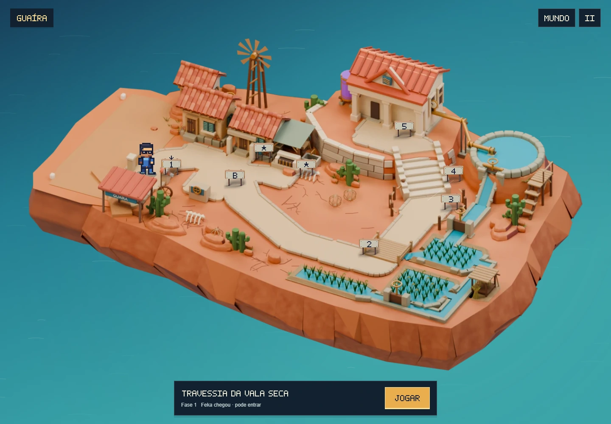
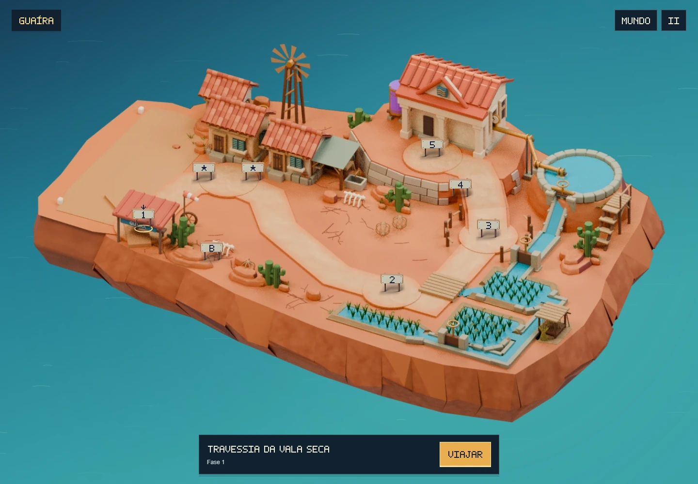
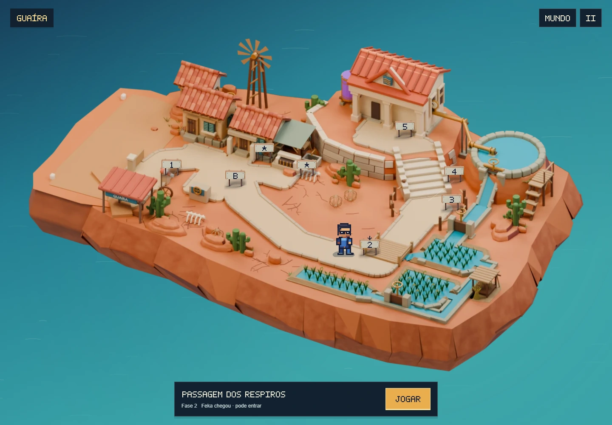
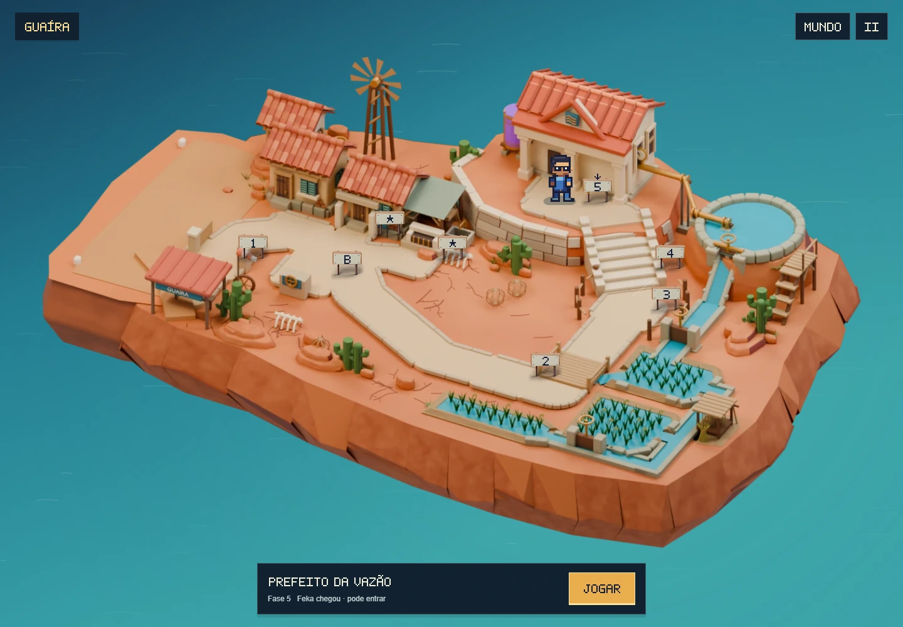
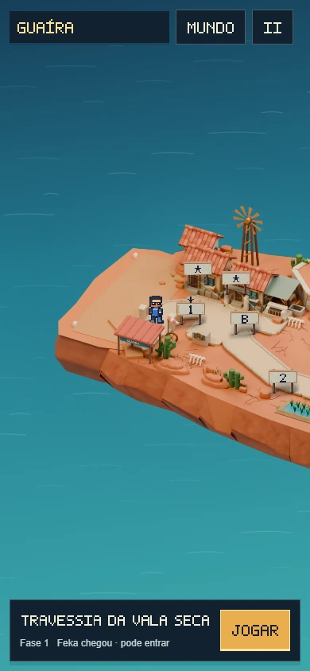
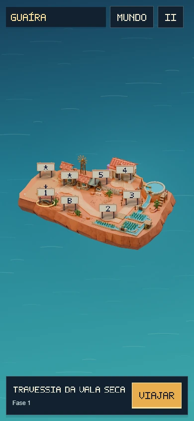
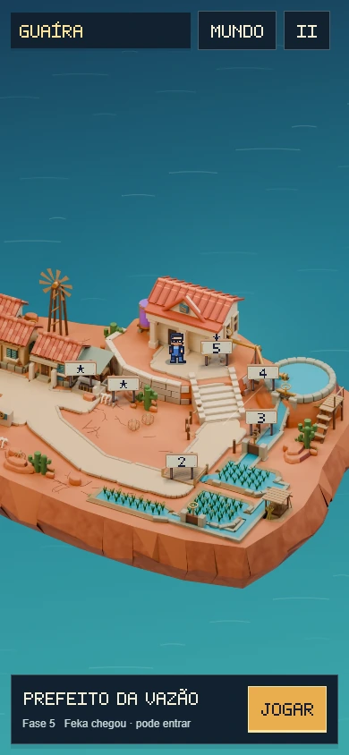

Guaíra.
Uma ilha para percorrer.
Ver a revisão do terreno e da ilha de 15/10/2026
Feka desembarca no aeródromo, percorre as ruas, atravessa a ponte e sobe até a Casa da Vazão. As fases e os dois desvios têm acessos próprios no modelo, ligados ao sistema de caminhada do World.
Revisão mais recente: Caminhos, ponte e posicionamento das placas — revisão 6.


ANTESAGORACaminhada no jogo
Registro do mapa em funcionamento: da Vala Seca aos arrozais, passando pelo curral e pela escadaria; depois, retorno ao bairro e aos opcionais.
Entradas e encontros do terreno





Leitura em telas menores
A câmera acompanha Feka. As placas do próximo trecho continuam disponíveis por toque, inclusive depois da abertura alternativa e dos desvios.


ANTESAGORA
Integração conferida
- Escolher uma placa solicita uma caminhada. A entrada só é liberada após a chegada; pular o percurso exige uma nova confirmação para jogar.
- As duas aberturas mantêm a progressão existente. Caminhar, visitar ou voltar ao mapa não concede conclusões.
- Galeria e Câmara de Alívio retornam às próprias entradas. Fases concluídas podem indicar a próxima como um novo percurso.
- A saída para outra ilha começa pela caminhada até o aeródromo. O voo mantém os pontos de embarque e a câmera originais.
- Arte e profundidade foram exportadas juntas do Blender. Feka usa o ator, a animação, os controles e a interface do mapa do World.
581 testes aprovados e build concluído. As verificações geométricas cobrem 571 pontos de rota, 1.713 sondagens de apoio e 1.780 posições do avião. O percurso também foi conferido no navegador em 1440 × 1000, 390 × 844 e 844 × 390. Detalhes e limites estão no registro da revisão.